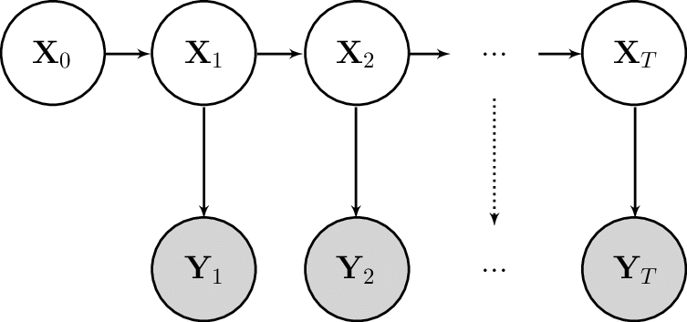

SSMProblems
Installation
In the julia REPL:
] add SSMProblemsDocumentation
SSMProblems defines a generic interface for State Space Models (SSM). The main objective is to provide a consistent interface to work with SSMs and their log-densities.
Consider a Markovian model from[Murray]: 
The model is fully specified by the following densities:
- Initialisation: $f_0(x)$
- Transition: $f(x)$
- Emission: $g(x)$
The dynamics of the model are reduced to:
\[\begin{aligned} x_t | x_{t-1} &\sim f(x_t | x_{t-1}) \\ y_t | x_t &\sim g(y_t | x_{t}) \end{aligned}\]
assuming $x_0 \sim f_0(x)$.
The joint law follows:
\[p(x_{0:T}, y_{0:T}) = f_0(x_0) \prod_t g(y_t | x_t) f(x_t | x_{t-1})\]
Users can define their SSM with SSMProblems in the following way:
struct Model <: AbstractStateSpaceModel end
# Sample from the initial density
function transition!!(rng::AbstractRNG, model::LinearSSM)
return rand(rng, f0(model))
end
# Sample from the transition density
function transition!!(rng::AbstractRNG, model::LinearSSM, state::Float64, ::Int)
return rand(rng, f(state, model))
end
# Return log-density of the model at *time* `step`
function emission_logdensity(model::LinearSSM, state::Float64, observation::Float64, ::Int)
return logpdf(g(state, model), observation)
end
# Optionally, if the transition log-density is known, the model can also specify it
function transition_logdensity(model::LinearSSM, prev_state::Float64, current_state::Float64, ::Int)
return logpdf(f(prev_state, model), current_state)
endNote, the omitted integer parameters represent the time step t of the state. Since the model is time-homogeneous, these are not required in the function bodies.
Package users can then consume the model logdensity through calls to emission_logdensity.
For example, a bootstrap filter targeting the filtering distribution $p(x_t | y_{0:t})$ using N particles would roughly follow:
struct Particle{T<:AbstractStateSpaceModel} <: AbstractParticle{T} end
for (timestep, observation) in enumerate(observations)
idx = resample(rng, logweights)
particles = particles[idx]
for i in 1:N
latent_state = transition!!(rng, model, particles[i].state, timestep)
particles[i] = SSMProblems.Utils.Particle(particles[i], latent_state) # track parent
logweights[i] += emission_logdensity(model, particles[i].state, observation, timestep)
end
endInterface
SSMProblems.AbstractStateSpaceModel — TypeAbstractStateSpaceModelSSMProblems.emission_logdensity — Functionemission_logdensity(model, state, observation[, timestep, cache])Compute the log potential of the current particle. This effectively "reweight" each particle.
SSMProblems.transition!! — Functiontransition!!(rng, model[, state, timestep, cache])Simulate the particle for the next time step from the forward dynamics.
SSMProblems.transition_logdensity — Functiontransition_logdensity(model, prev_state, current_state[, timestep, cache])(Optional) Computes the log-density of the forward transition if the density is available.
SSMProblems.SSMProblems — ModuleA unified interface to define State Space Models interfaces in the context of Particle MCMC algorithms.
SSMProblems.Utils.Particle — TypeParticle{T}Particle as immutable LinkedList.
SSMProblems.Utils.linearize — Methodlinearize(particle)Return the trace of a particle, i.e. the sequence of states from the root to the particle.
SSMProblems.Utils — ModuleCommon concrete implementations of Particle types for Particle Filter kernels.- Murray
Murray, Lawrence & Lee, Anthony & Jacob, Pierre. (2013). Rethinking resampling in the particle filter on graphics processing units.